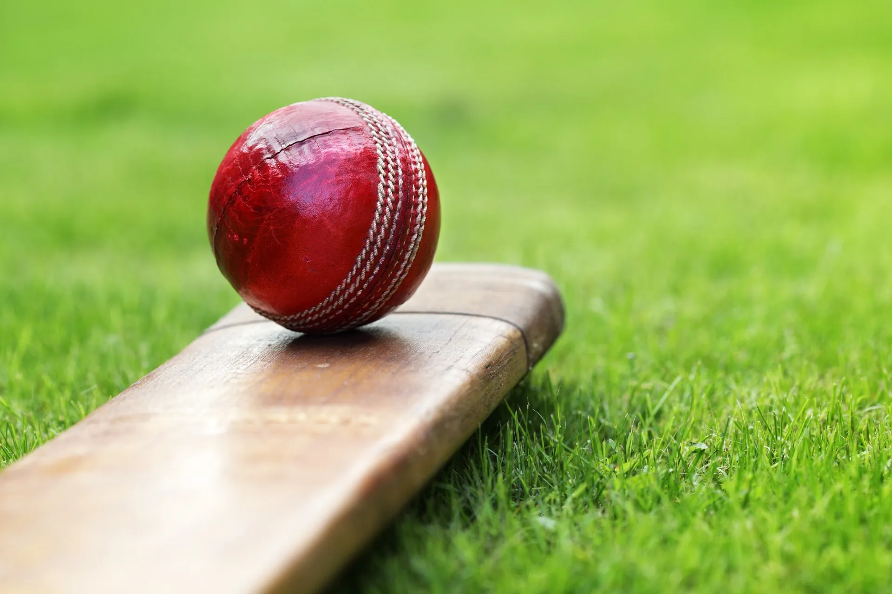
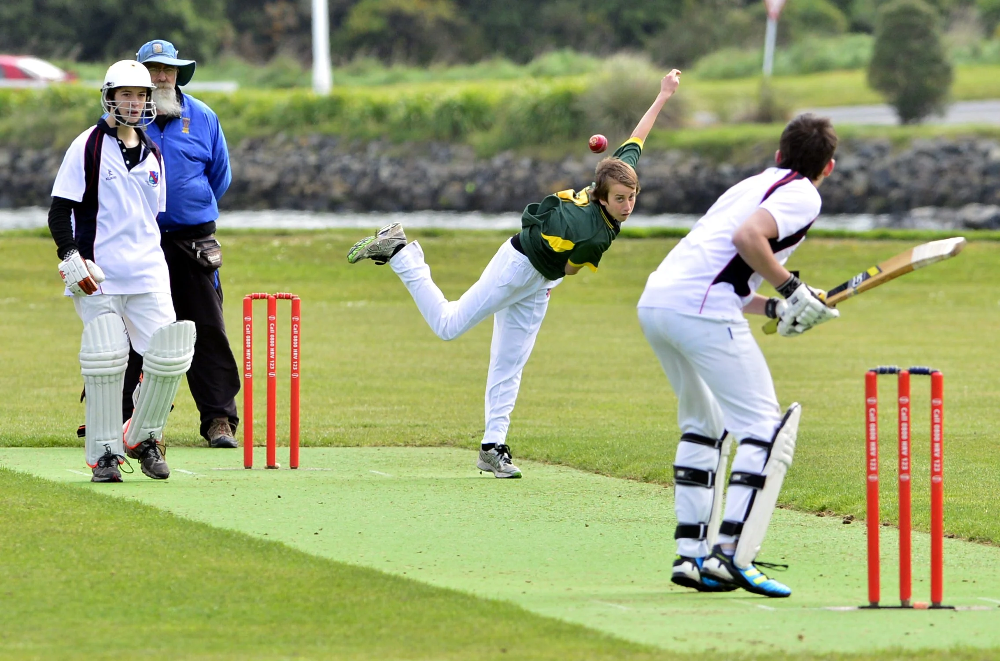

Introduction:
Cricket, often hailed as a gentleman's game, is a sport that transcends boundaries and unites people worldwide. Its blend of strategy, skill, and camaraderie has captured the hearts of millions. From the thrill of a perfectly timed shot to the tension of a close match, cricket has a unique allure. Join us on a journey to explore this fascinating sport!
Understanding Cricket

At its core, cricket is a bat-and-ball game played between two teams. The objective is straightforward: score more runs than the opposition. A match consists of innings, where each team takes turns to bat and bowl.
Field
A cricket field is an expansive ground with a rectangular pitch at its center. The pitch is where most of the action occurs—a strip of carefully prepared grass with two sets of wooden stumps at each end.
Teams & Players
A team typically consists of 11 players, each with specific roles—batsmen, bowlers, and fielders. The batsmen aim to score runs, while bowlers try to dismiss them by bowling the ball. Fielders support by preventing runs and taking catches.
Types of Matches
Cricket offers various formats, each with its own rules and durations. The most common are Test matches, One Day Internationals (ODIs), and the fast-paced Twenty20 (T20) matches.
Test matches are the oldest and traditionally the longest, spanning five days. ODIs are limited to 50 overs per side, whereas T20s are completed in about three hours, fostering an electrifying atmosphere.
 A cricket field is an expansive ground with a rectangular pitch at its center. The pitch is where most of the action occurs—a strip of carefully prepared grass with two sets of wooden stumps at each end.
A cricket field is an expansive ground with a rectangular pitch at its center. The pitch is where most of the action occurs—a strip of carefully prepared grass with two sets of wooden stumps at each end.
 A team typically consists of 11 players, each with specific roles—batsmen, bowlers, and fielders. The batsmen aim to score runs, while bowlers try to dismiss them by bowling the ball. Fielders support by preventing runs and taking catches.
A team typically consists of 11 players, each with specific roles—batsmen, bowlers, and fielders. The batsmen aim to score runs, while bowlers try to dismiss them by bowling the ball. Fielders support by preventing runs and taking catches.